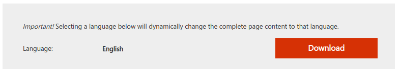
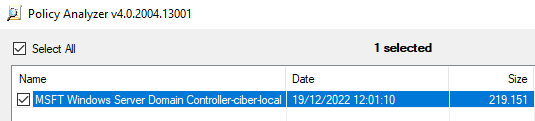
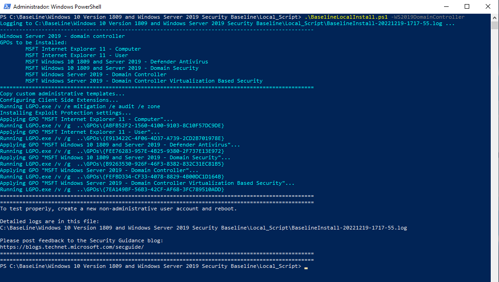

2. Hardening Windows usando Microsoft Security Baselines
1. Líneas base de seguridad de Windows
El compromiso de Microsoft con sus clientes se basa en ofrecer productos y servicios seguros ya sea en las versiones de Escritorio Windows 10/11 como en las versiones de servidor Windows Server además de otras aplicaciones adicionales dentro del sistema operativo.
Por defecto, el diseño de los sistemas operativos esta enfocado a la seguridad, pero la configuración depende de muchos factores por lo que se pueden establecer configuraciones especificas y más detalladas en función de las necesidades de cada organización, es decir, se pude ser más o menos restrictivo a la hora de realizar las distintas configuraciones del sistema.
Estas instrucciones son las llamadas “líneas base de seguridad” y Microsoft ya tiene una serie de ellas establecidas, como pueden ser:
- Protección de aplicaciones web.
- Protección de la información.
- Protección de aplicaciones.
- Protección para dispositivos.
Por lo tanto, estas líneas base son un grupo de configuraciones recomendadas por un amplio grupo de usuarios, tanto personal de Microsoft, como partners, clientes o usuarios avanzados (Microsoft Most Valuable Proffesional).
Las líneas base son un buen punto de partida para proteger nuestros sistemas ante amenazas. La estrategia a seguir para implantar las líneas base de seguridad en nuestro sistema sería la siguiente:
Paso 1. Aplicar las líneas base que se consideren en una Unidad Organizativa de Pruebas (ejemplo: testLineasBase) donde se tendrán usuarios y equipos de test.
Paso 2. Agregar o modificar las configuraciones que trae por defecto de acuerdo con los requerimientos y directivas internas de la empresa/organización.
Paso 3. Aplicar las líneas base de seguridad en los equipos de producción.
 |
2. Microsoft Security Compliance Toolkit 1.0
Existen guías de fortificación que nos pueden ayudar a aumentar la seguridad de los equipos. En esta ocasión, vamos a fortificar sistemas Windows gracias a las guías y herramientas proporcionadas por Microsoft, en concreto, trabajaremos con Security Compliance Toolkit. Vamos descargarnos las líneas base de seguridad y aprender a identificar y localizar los distintos objetos de directivas de grupo (GPO).
Las líneas base se pueden descargar a través del Centro de Descargas de Microsoft como un conjunto de herramientas (Toolkit) que permite a los administradores descargar, analizar, probar, editar y aplicar las recomendaciones o líneas base para Windows y otros productos.
Figura 1. Microsoft Security Compliance Toolkit 1.0.
Como se puede observar en la Figura 1, existen distintas líneas base de seguridad para varias versiones de Windows 10/11, Windows Server (2012, 2016, 2019-2022), incluso para Microsoft 365 y Edge. También, se proporcionan Herramientas y scripts para Power Shell.
A fecha 19 de diciembre de 2022, el Security Compliance Toolkit está formado por lo siguiente:
-
Líneas base de seguridad de Windows 11
-
Windows 11, versión 22H2
-
Windows 11, versión 21H2
-
-
Líneas base de seguridad de Windows 10
- Windows 10 version 22H2 (actualización de noviembre de 2022).
- Windows 10, versión 21H2 (actualización de noviembre de 2021).
- Windows 10, versión 21H1 (actualización de mayo de 2021).
- Windows 10, versión 20H2 (actualización de octubre de 2020).
- Windows 10, versión 1809 (actualización de octubre de 2018).
- Windows 10, versión 1607 (actualización de aniversario).
- Windows 10, versión 1507.
-
Líneas base de seguridad de Windows Server
- Windows Server 2022.
- Windows Server 2019.
- Windows Server 2016.
- Windows Server 2012 R2.
-
Línea base de seguridad de Microsoft Office
-
Office 2016
-
Aplicaciones Microsoft 365 para empresas versión 2206
-
-
Microsoft Edge línea base de seguridad: Versión 107.
-
Herramientas:
- Herramienta Analizador de directivas.
- Herramienta Objeto de directiva de grupo local (LGPO).
- Establecer herramienta de seguridad de objetos.
- Herramienta GPO a PolicyRules.
-
Scripts
- Baseline-ADImport.ps1
- Baseline-LocalInstall.ps1
- Remove-EPBaselineSettings.ps1
- MapGuidsToGpoNames.ps1
Respecto a las versiones, la versión 2022 de Windows Server es la siguiente versión del canal semianual de Windows Server. La versión 20H2 que incluye Windows 10 y Windows Server, tiene soporte técnico durante 18 meses a partir de su lanzamiento, es decir, el soporte finalizó el 10 de mayo del 2022. Por otro lado, la versión 1809 que incluye Windows Server 2019 y Windows 10, tiene soporte estándar hasta el 09 de Enero de 2024.
Figura 2. Versiones actuales de Windows Server mediante la opción de mantenimiento.
Referencias
- [Novedades de Windows Server, versiones 2004 y 20H2]
- Información de la versión de Windows Server
- [Security Compliance Toolkit-10]
- [Windows Server container update history]
3. Security Compliance Toolkit - Línea base de seguridad
Las líneas base de seguridad de Microsoft contienen la configuración recomendada que Microsoft sugiere para las estaciones de trabajo y los servidores de Windows para proporcionar una configuración segura y proteger los controladores de dominio, los servidores, las equipos y los usuarios.
Microsoft ha desarrollado plantillas y objetos de política de grupo de referencia basados en las líneas de base de seguridad. Los administradores pueden aplicarlos en sus dominios Active Directory.
La configuración de seguridad en Microsoft Security Baseline GPO permite a los administradores proteger la infraestructura de Windows de acuerdo con las últimas mejores prácticas de seguridad global.
En este apartado, se estudian las guías y herramientas proporcionadas por Microsoft, en concreto, Security Compliance Toolkit.
3.1 Descarga de las líneas base y lectura de documentación
Para descargar las líneas base hay que acceder a la url. En el artículo que no te llevará más de 4 minutos en leerlo, se explica lo que son las líneas base de seguridad y su uso.
Figura 3. Leer el artículo sobre las líneas base de seguridad.
Para aprender a identificar y localizar los distintos objetos de directivas de grupo (GPO), tenemos que descargar las líneas base de seguridad (pulsa la imagen inferior).
|  |
3.2 Escenario
Dado que nuestro escenario de trabajo en entornos Windows parte de un controlador del dominio Windows Server 2019 Datacenter y un cliente W10-19043.928.210409-1212.21h1_release_svc_refresh_CLIENTENTERPRISEEVAL_OEMRET_x64, trabajaremos con las últimas versiones disponibles, es decir:
- Windows 10 version 22H2 Security Baseline.zip (última actualización).
- Windows 10 Version 1809 and Windows Server 2019 Security Baseline.zip.
En estos ficheros, podemos encontrar plantillas de línea de base de seguridad de GPO para diferentes elementos de la infraestructura de Windows: políticas para equipos, usuarios, servidores de dominio, controladores de dominio (hay una política separada para los controladores de dominio virtuales), así como Internet Explorer, BitLocker, Credential Guard, configuración de antivirus de Windows Defender. Las políticas de grupo configuradas para varios escenarios se encuentran en la carpeta GPO (puedes ver la lista de GPO para Windows Server 2019 y Windows 10 22H2 a continuación):
- MSFT Internet Explorer 11 - Computer.
- MSFT Internet Explorer 11 - User.
- MSFT Windows 10 22H2 - BitLocker.
- MSFT Windows 10 22H2 - Computer.
- MSFT Windows 10 22H2- User.
- MSFT Windows 10 22H2 - Credential Guard.
- MSFT Windows 10 22H2 - Defender Antivirus.
- MSFT Windows 10 22H2 - Domain Security.
- MSFT Windows 10 1809 and Server 2019 - Defender Antivirus.
- MSFT Windows 10 1809 and Server 2019 - Domain Security.
- MSFT Windows 10 1809 and Server 2019 Member Server - Credential Guard.
- MSFT Windows Server 2019 - Domain Controller.
- MSFT Windows Server 2019 - Domain Controller Virtualization Based Security.
- MSFT Windows Server 2019 - Member Server.
Hay que tener en cuenta que hay una línea de base de seguridad separada para cada versión de Windows Server o compilación de Windows 10.
Tarea 1
Accede al recurso Security Compliance Toolkit de Microsoft 1.0 y lee atentamente las secciones:
- ¿Qué es el Security Compliance Toolkit (SCT)?.
- ¿Qué es la herramienta Analizador de directivas?.
Al final de la primera sección encontrarás el enlace descargar las herramientas, accede a él, bájate y descomprime los siguientes elementos:
- PolicyAnalyzer.zip (se usará en la práctica 1).
- Windows 10 version 22H2 Security Baseline.zip (o el más actual).
- Windows Windows 10 1809 and Server 2019 Security Baseline.zip (o el más actual).
Una vez se descomprimen los elementos anteriores:
1. Accede a la carpeta 'Windows-10-v22H2-Security-Baseline' y luego a la carpeta 'Documentation'. A continuación,abre el archivo 'MS Security Baseline Windows 10 v22H2.xlsx'. En esta hoja de cálculo se muestran todas las configuraciones recomendadas de directivas de grupo (Group Policy) para clientes Windows.
2. Realiza la misma operación con el fichero 'Windows 10 1809 and Server 2019 Security Baseline.zip'. En la carpeta 'Documentation', abre el archivo 'MS Security Baseline Windows 10 v1809 and Server 2019.xlsx'. En esta hoja de cálculo se muestran todas las configuraciones recomendadas de directivas de grupo (Group Policy) para windows Server y Windows 10 (versión más antigua que la del apartado 1).
3. Investiga las hojas de cálculo y date cuenta que cada categoría de directivas tiene su propia hoja (pestaña), y que en cada una de ellas puedes ver los valores que se aplicaran a las distintas directivas dependiendo si se trata de:
- Windows 10.
- Windows Server miembro del dominio.
- Windows Server controlador de dominio.
4. Accede ahora a la carpeta 'Windows-10-v22H2-Security-Baseline' y luego a la carpeta 'GPOs', donde encontrarás varias carpetas con los distintos objetos de directivas de grupo (GPO). Para saber a qué corresponde cada una de ellas tendrás que buscar los nombres de las carpetas en las etiquetas <ID> del archivo manifest.xml. Una vez localizada, en el correspondiente campo <GPODisplayName> verás su nombre descriptivo.
5. Para el servidor, realiza la misma operación que en el apartado anterior (4).
|
Localiza los nombres de las carpetas que almacenan estas GPO:
Para los dos siguientes, has de acceder a la carpeta 'Windows-10-v22H2-Security-Baseline/GPOs':
|
|
|
¿Cómo se llaman las carpetas que corresponde a cada apartado (a, b, c y a, b) ?. Ayuda: Microsoft proporciona un script de powershell en la capeta Tools que está en Local:Script, que nos permita saber cuál es el GUID asociado al MSFT. Si se observa la figura inferior, al script se le pasa como argumento la ruta relativa donde se encuentra el directorio GPOs.
|
4. Policy Analyzer
Generalmente, antes de aplicar las GPO descargadas e identificadas para utilizar en nuestro sistema, hay que comprobar qué van a aportar las líneas base de configuración de seguridad de Microsoft al mismo. Para ello, Microsoft nos proporciona la herramienta Policy Analizer que nos permitirá realizar ese análisis.
En los siguientes puntos, se describe el proceso para comparar la línea base que se ha trabajado en la tarea anterior con la configuración actual de un sistema, en este caso de ejemplo, un servidor Windows Server 2019 Datacenter promocionado a controlador del dominio ciber.local.
Figura 4. Servidor Windows Server 2019 Datacenter controlador del dominio ciber.local.
1. Ejecutar PolicyAnalyzer
A partir del fichero PolicyAnalyzer.zip , descomprimimos el mismo y ejecutamos el programa PolicyAnalyzer.
Figura 5. Ejecutar PolicyAnalyzer.
2. Importar las reglas.
A continuación, hay que pulsar el botón Add... para importar las reglas desde las carpetas de directivas de grupo. Seguidamente, hay que acceder a File --> Add files from GPO(s)... y luego, seleccionar la carpeta correspondiente a MSFT Windows Server 1809 - Domain Controller (ver tarea 1) y añadirla (User+Computer). Para finalizar, hay que pulsar el botón Import... Nota: Si de da algún error, proseguiremos de igual modo.
Figura 6. Añadir reglas.
Una vez se ha pulsado le botón Import..., hay que establecer un nombre para guardarlo en disco. Para este caso de ejemplo, se guarda la GPO con este nombre: MSFT Windows Server Domain Controller-ciber-local. Una vez guardado, nos aparece el registro en el panel (ver imagen inferior).

Figura 7. Reglas importadas.
3. Compare to Effective State
El siguiente paso, es asegurar que las reglas que se acaban de añadir estén seleccionadas y a continuación hay que pulsar el botón Compare to Effective State. Como se puede observar, se ha añadido un nuevo conjunto de reglas con la configuración afectiva (imagen inferior).
Figura 8. Pulsar 'Compare to Effective State'.
Una vez pulsado el botón 'Compare to Effective State' En el visor de directivas se puede ver las reglas incluidas en la línea base, con su valor (penúltima columna) y el valor que tiene en el sistema actualmente (última columna). Además, si hacemos clic sobre alguna de las directivas, se puede ver su descripción y los valores detallados tanto en la línea base como en la configuración efectiva (ver imagen inferior).
Figura 9. Visor de directivas.
Desde el menú View se puede focalizar la atención sobre las directivas configuradas con valores distintos (fondo de celda gris). Si se tienen directivas que entran en conflicto, el fondo de la celda es amarillo, ejemplo:
Como se puede observar en la imagen superior, se ha encontrado un conflicto referido al ICMP redirect, donde la línea base nos dice que debería estar deshabilitado.
Desde el menú View, se puede seleccionar que sólo presente las diferencias, o sólo los conflictos para reducir la salida del informe y sólo centrarnos en lo necesario.
Figura 10. Menú View - Only Differences.
5. Importación de líneas base
5.1 Importar una línea base de seguridad
Como ejemplo, se va a importar la GPO descargada en la Tarea 1, en concreto, MSFT Windows Server 1809 - Domain Controller en la categoría Objetos de directiva de grupo del controlador del dominio. Para ello, hay que inicia sesión en el controlador del dominio con un usuario con los privilegios necesarios para administrar las directivas de grupo.
A continuación, hay que acceder a Menú Windows --> Administrador del Servidor --> Herramientas --> Administración de directivas de grupo o ejecutar gpmc.msc. en la consola cmd.
Figura 11. Panel de Administración de directivas de grupo.
Una vez estamos en el Panel 'Administración de directivas de grupo', tenemos que desplegar los siguientes elementos del panel lateral: Bosque: (nuestro bosque) --> Dominios --> (para este caso ciber.local). En ese nodo del árbol, creamos un nuevo objeto de directiva de grupo por medio del menú contextual de la categoría 'Objetos de directiva de grupo'.
Figura 12. Crear nuevo objeto de directivas de grupo.
Para este caso de ejemplo, le ponemos como nombre MSFT Windows Server 1809 - Domain Controller-ciber y pulsamos Aceptar.
Figura 13. Nombrado de la GPO.
Si todo ha ido bien, en el panel central aparecerá ya creado el nuevo objeto.
Figura 14. Nuevo objeto de directiva de grupo creado.
Una vez se ha creado el nuevo objeto, lo seleccionamos y hacemos click con el botón derecho del ratón y seleccionamos la opción 'Importar configuración' de su menú contextual. Aparece un asistente (ver figura 15) donde nos aparecen una serie de indicaciones para realizar la importación, a saber: Realizar copia de seguridad, directorio donde está la configuración a importar, etcétera.

Figura 15. Asistente para importar configuración.
En el punto donde nos solicita el directorio donde está la configuración a importar, hay que seleccionar el directorio GPOs del directorio 'Windows 10 Version 1809 and Windows Server 2019 Security Baseline' para poder importar para este caso de ejemplo, la configuración de 'MSFT Windows Server 2019 - Domain Controller'.
Figura 16. Examinar la carpeta de GPOs.
Una vez seleccionado el directorio, el siguiente paso es seleccionar 'MSFT Windows Server 2019 - Domain Controller' (ver figura inferior) y pulsar Siguiente.
Figura 17. Selección de la configuración a importar.
En el caso de que la configuración a importar contenga referencias a entidades o rutas que no tengamos en nuestro sistema, se deben cambiar por las que se tengan.
Por último, indicamos que se copien directamente sin adaptarlas. Cuando finalice el proceso de importación se nos advertirá de los posibles problemas.
Figura 18. Copiado igual que al origen.
Al pulsar 'Siguiente', el asistente nos informa que la configuración se completó correctamente (si todo ha ido bien) por lo que ahora, podemos pulsar 'Finalizar' para que comience el proceso de importación.
Figura 19. Fin de la importación.
Una vez finaliza el proceso de importación, el asistente nos informa del Estado del mismo. Para este ejemplo, nos salen unos mensajes de 'Advertencias' referidas a nombrados en Inglés y que en nuestro caso, el sistema está en Español.
Figura 20. Progreso de importación.
Una vez ha finalizado la importación, podemos observar que ya está habilitada y podemos consultar, por ejemplo, la configuración aplicada.
Figura 21. Configuración aplicada.
5.2 Aplicar varias configuraciones de GPO a la máquina local
Para aplicar varias configuraciones de GPO en el equipo de manera automática, Microsoft ha desarrollado un script en Power Shell 'BaselineLocalInstall.ps1' que se encuentra en el directorio 'Local_Script''.
Figura 22. Acceso a la carpeta que contiene el script.
Antes de ejecutar el script, hay que copiar el fichero LGPO.exe en el directorio Tools dado que se utiliza para desplegar la configuración de las GPOs en el equipo. El no tener el fichero LGPO en el directorio Tools, generará el siguiente error.
Figura 23. Error al ejecutar el script.
El script Baseline-LocalInstall.ps1 necesita de un parámetro para saber qué GPOs se quieren aplicar y que para este caso, es la 'Windows 10 Version 1809 and Windows Server 2019 Security Baseline'. Los parámetros posibles son (se pueden consultar en el propio script):
- -Win10DomainJoined - Windows 10 v1809, domain-joined
- -Win10NonDomainJoined - Windows 10 v1809, non-domain-joined
- -WS2019Member - Windows Server 2019, domain-joined member server
- -WS2019NonDomainJoined - Windows Server 2019, non-domain-joined
- -WS2019DomainController - Windows Server 2019, domain controller
Para nuestro caso de estudio, le pasaremos el parámetro -WS2019DomainController ya que se desea aplicar todo lo relacionado a un servidor controlador del dominio.
A continuación, abrimos una terminal de Powershell como Administrador y ejecutamos el script Baseline-LocalInstall.ps1 con el parámetro -WS2019DomainController.
PS C:\BaseLine\Windows 10 Version 1809 and Windows Server 2019 Security Baseline\Local_Scripts>.\Baseline-LocalInstall.ps1 -WS2019DomainController

Figura 24. Ejecución del script y configuración de las GPOs relacionadas a WS2019DomainController.
La ejecución del script, crea un fichero log que para este caso es: 'BaselineInstall-20221219-1717-
Figura 25. Fichero de log creado por el script.
Una vez se ejecuta el script se aplicarán automáticamente todas las configuraciones.
5.3 Importar todas las líneas base de seguridad automáticamente
Para importar todas las líneas base de seguridad de manera automática, Microsoft ha desarrollado un script 'Baseline-ADImport.ps1', que permite importar todas las GPO a Active Directory, estas se mostrarán en "Objetos de directiva de grupo" y no se aplicarán a nada.
Para el caso de estudio, este script no viene en el directorio Local_Script, por lo que hay que copiarlo éste y sus dependencias desde cualquier otra línea base, ejemplo: 'Windows-10-v22H2-Security-Baseline'. Como se observa en la imagen inferior, se ha copiado el directorio Scripts de 'Windows-10-v22H2-Security-Baseline' a 'Windows 10 Version 1809 and Windows Server 2019 Security Baseline'.
Figura 26. Copia del directorio Scripts.
Una vez copiado, hay que acceder al directorio Scripts y ejecutar el script Baseline-ADImport.ps1.
PS C:\BaseLine\Windows 10 Version 1809 and Windows Server 2019 Security Baseline\Scripts> .\Baseline-ADImport.ps1
Por pantalla, se va informando de las importaciones que está realizando.
Figura 27. Importación automática de las líneas base.
Una vez ha finalizado el script, ya se puede acceder al panel de 'Administración de directivas de grupo' par comprobar la importación.
Figura 28. Lineas base importadas.
6. Probar las líneas base
Antes de aplicar las líneas base a un sistema en producción, hay que probarlas en un entorno de pruebas. Para ello, habría que crear una serie de unidades organizativas y aplicar las líneas base necesarias a la unidad organizativa. A continuación, habría que mover los equipo de prueba a las mismas y verificar la funcionalidad. También se puede usar el script de importación local para probar una máquina independiente sin riesgo de afectar a ninguna otra máquina en el dominio.
Una vez aplicadas las lineas base, habría que probar el acceso a los recursos de la red, escanear la máquina con un escáner de vulnerabilidades, probar el acceso remoto, etcétera.
7. Referencias
Para saber más
A continuación puedes encontrar varios enlaces donde profundizar en las líneas base de seguridad de Windows
- Web general sobre líneas base de seguridad: https://docs.microsoft.com/es-es/windows/security/threat-protection/windows-security-baselines
- Web para la descargar del Toolkit: https://docs.microsoft.com/es-es/windows/security/threat-protection/security-compliance-toolkit-10
Herramientas:
Obra publicada con Licencia Creative Commons Reconocimiento No comercial Compartir igual 4.0